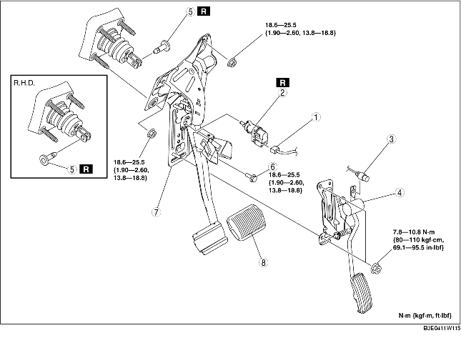

1. For L.H.D., Remove the battery and battery tray. (See BATTERY REMOVAL/INSTALLATION [ZJ, Z6].) (See BATTERY REMOVAL/INSTALLATION [LF].)
2. Disconnect the brake pipe (master cylinder side). (See MASTER CYLINDER REMOVAL/INSTALLATION.)
3. Remove in the order indicated in the table.
4. Install in the reverse order of removal.
5. Adjust the accelerator cable. (See ACCELERATOR CABLE INSPECTION/ADJUSTMENT [ZJ, Z6].) (See ACCELERATOR CABLE INSPECTION/ADJUSTMENT [LF].)

.
|
1
|
Brake switch connector
|
|
2
|
Brake switch
|
|
3
|
Accelerator cable
|
|
4
|
Accelerator pedal
|
|
5
|
Joint pin
(See Joint Pin Installation Note.)
|
|
6
|
Bolt (L.H.D.)
|
|
7
|
Brake pedal
(See Brake Pedal Removal Note.)
|
|
8
|
Pedal pad
|
1. Remove the brake pedal installation nuts.
2. Move the power brake unit to the vehicle front where the power brake unit fork does not interfere with the brake pedal arm.
3. Remove the brake pedal.
1. For L.H.D., install the new joint pin by aligning the pin holes of the brake pedal and power brake unit fork.
2. For R.H.D., install the new joint pin by aligning the pin holes of the brake pedal bracket and power brake unit fork.
3. Verify that the joint pin touches the power brake unit fork completely.
1. Inspect the brake pedal. (See BRAKE PEDAL INSPECTION.)
2. With the brake pedal fully released, insert a new brake switch into the installation hole on the brake pedal.
3. Secure the brake switch by turning it counterclockwise 45°.